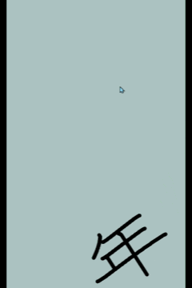
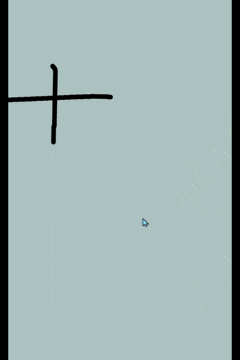
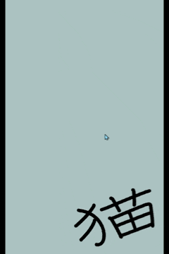
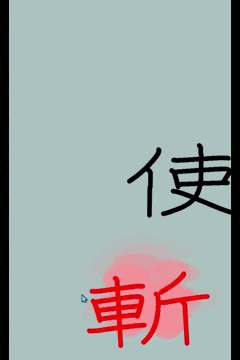
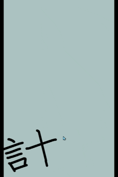
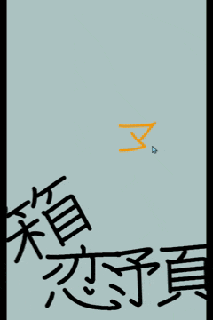
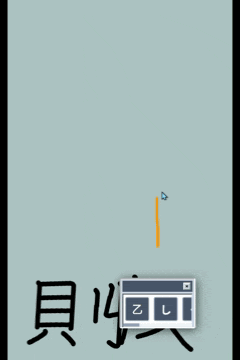
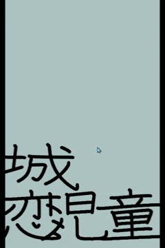

プレイ
https://thekanjigame.web.app/
（PCでもプレイ可能です。）
操作
-
テトリスのように、落ちてくる黒い文字を左右にドラッグして位置を移動

-
画面の好きな場所に手書きで文字を書き、候補から文字を選ぶと、その文字が実体化して落下

- 自分で書いた字は、左右にドラッグして位置を、上下にドラッグして大きさを変えられる
「斬る」モード
- 字が「斬」に変化したら、その「斬」をタップすることで「斬るモード」が発動する
-
消したい文字をスワイプして斬ると、その文字が消える

文字が「斬」に変化する条件
-
文字の読み方を入力する（例：猫 → 「ねこ」）
-
その文字を使う言葉の読み方を入力する（例：使 → 「つかう」）

-
後ろに続く文字を当てる（例：計 → 計「る」）

※さらに文字が続く場合もあります（例：革 → 革「命」 → 革命「家」）
-
文字を正しく書く

-
前に来る文字を当てる（例：収 → 「日」収）

※前後に文字が続く場合もあります（例：茶 → 「お」茶 → お茶「会」）
困ったときは
- 文字をダブルタップするとメニューが開きます
-
一番上の文字をタップすると、その文字を使った言葉や読み方のヒントが表示されます。
